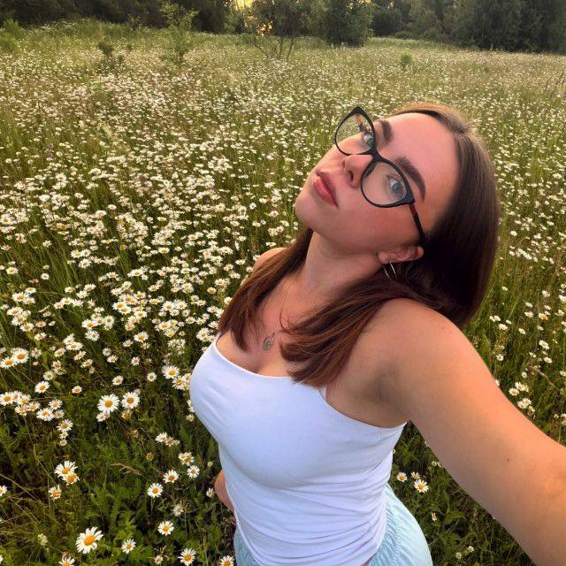

ПОДРУГИ · №1История из архива
Соня Брат
Викулек! С днём рождения, моя дорогая! Желаю тебе океан счастья, горы смеха и море любви! Ты — самая лучшая! Целую!
История из вашего общего архива появится здесь.
Видео-воспоминаниеОжидает настоящий файл
ВидеопоздравлениеОжидает настоящий файл